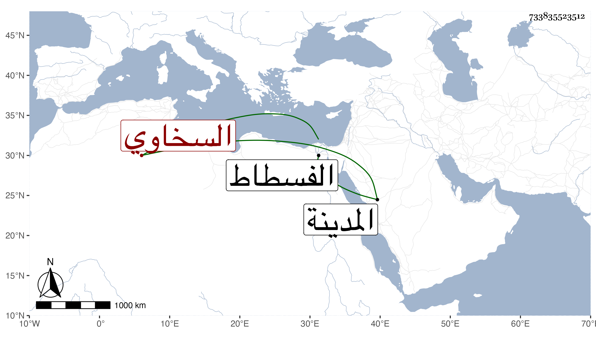

0902Sakhawi.DawLamic.ITO20230111-ara1.EIS1600.733835523512
Biography ID: 733835523512
السخاوي نسبة لسخا بلد غربي الفسطاط نسب إليها المتقدمون السخوي أحمد ابن محمد بن زين ممن حضر أمالي الولي العراقي وأظنه أحمد المعروف بابن موين ممن حضر إملاء شيخنا وأخذ عنه السراج بن حريز ومحمد بن محمد بن محمد تلميذ الزين العراقي ذو مناظيم في الحديث وغيرها ومساعد بن ساري ومحمد بن أبي بكر بن عثمان وبنوه أبو بكر وعبد الرحمن وفاطمة وبنو الثاني كاتبه محمد وعبد القادر وأبو بكر وأثكل الأول بضع عشرة أنجبهم أحمد وللثاني جماعة منهم البدر محمد وللثالث زين العابدين محمد وعز الدين محمد وقرة العين وناصر الدين محمد وخليل ابنا أحمد بن علي وثانيهما نديم الظاهر حقمق ووالد أحمد وعمه ناصر الدين محمد وعلي ابن محمد بن عبد النصير الكاتب عصفور ومحمد بن عز الدين محمد بن علي بن وجيه المعبر ومحمد بن أحمد بن موسى بن أبي بكر المالكي قاضي المدينة ابن القصبي وبنوه خير الدين أبو الخير محمد وأحمد وبنو أولهم المحب محمد .
